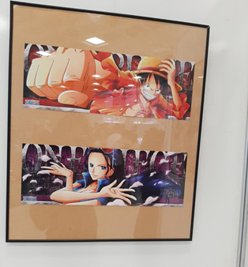
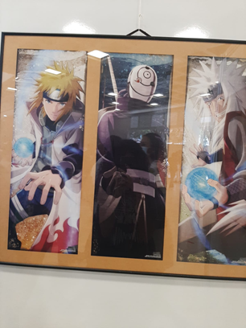

A arte de capturar um relâmpago na garrafa
A arte de capturar um relâmpago na garrafa Bingo: O rei das manhãs
Bingo: O rei das manhãs Nós de Oz
Nós de Oz O fenômeno Euphoria
O fenômeno Euphoria "Spree": A Necessidade de ser famoso
"Spree": A Necessidade de ser famoso Preconceito Linguístico
Preconceito LinguísticoFESTIVAL GEEK & MATSURI
O número de pessoas que se identificam com a cultura geek vem crescendo no Brasil. Também conhecida como cultura nerd, ganhou força na década de 80 e 90, quando as pessoas começaram a se apaixonar por tecnologia, games, inteligência artificial, ficção científica que eram consideradas temas que só “nerds” se interessavam.
Essa comunidade cresceu nos anos 2000, com a popularização de algumas franquias de filmes, principalmente de heróis. Além de gostar desses temas, esses indivíduos estudam sobre, tornando-se quase especialista sobre. Tanto é que em 2020, esse setor movimentou mais de R$20 bilhões, segundo a Associação Brasileira de Licenciamento.
Falando um pouco mais sobre essa cultura, existe uma data para sua comemoração - ela foi criada em 1977, quando estreou “Star Wars: Episódio IV- Uma nova esperança”, que se tornou um símbolo. Desde então, este dia foi chamado de Dia da Cultura Geek. É importante pontuar que atualmente, Star Wars é uma das maiores franquias nesse ramo.
Um costume comum entre as pessoas que se consideram nerds é o cosplay, onde as pessoas se vestem como seus personagens preferidos ou com uma roupa que faz referência a eles de alguma forma. Para promover mais os cosplayers, são feitos desfiles e apresentações onde as pessoas do lugar elegem o melhor cosplay.
Esse costume se originou nos Estados Unidos em 1970, quando uma convenção promoveu a entrada gratuita de pessoas fantasiadas de super-heróis. Começou a ser introduzido no Brasil na década de 80 e desde então foi crescendo cada vez mais, e assim fazendo com que o Brasil se tornasse um dos maiores consumidores de produtos nerds.
E então, fizemos um tour pelo evento Geek & Matsuri ocorrido no Sesi de Osasco nos dias 26 e 27 de março de 2022, que teve justamente como foco a cultura geek e oriental. No evento havia diversas atrações e muitas pessoas fazendo cosplay, desde personagens de filmes a personagens de animes e mangás.

Entre as atrações do festival estava o concurso de cosplay, onde o cosplayer vencedor do concurso do dia 26 foi o cosplay de Springtrap, de um jogo de terror chamado Five Nights at Freddy’s.

Para os fãs da cultura oriental, não faltaram opções durante o evento. Uma seção inteira foi dedicada especialmente para essa área. Tendo uma área específica para mangás - que são histórias em quadrinhos de origem japonesa produzidas em preto e branco e de diversos gêneros, trazendo um estilo de traço diferente. Sua ordem de leitura é diferente daquela que é costume por aqui: da direita para a esquerda.
Entre o que se podia encontrar, estavam mangás famosos como Kimetsu no Yaiba, Naruto, Hunter x Hunter, Dragon Ball, Bungo Stray Dogs e Jujutsu Kaisen.

Ainda voltada para essa área e para aqueles que apreciam artes visuais, havia uma exposição de uma coleção de cartazes de mangás japoneses pertencentes ao acervo da Fundação Japão em São Paulo, que podiam ser vistos ao andar pelo espaço.
 Na área aberta do festival, barracas diversas estavam presentes. Artigos como espadas, colares e anéis referenciando filmes, séries e animes da cultura geek e japonesa podiam ser adquiridos, além de produtos mais difíceis de se encontrar por aí em qualquer lugar.
Na parte de alimentação, havia desde comidas como yakisoba, até doces como crepe, raspadinha e bubble tea. Podia-se provar um pouco de tudo. Para os que queriam entrar no clima oriental, havia porções de yakisoba, guioza (parecido com um pastel, de massa bem fininha, recheada com legumes, podendo ser cozido no vapor ou frito em pouco óleo) e lámen. Na parte de doces, havia o taiyaki, tipo de bolo japonês em formato de peixe geralmente recheado com anko, pasta doce de feijão vermelho (azuki).